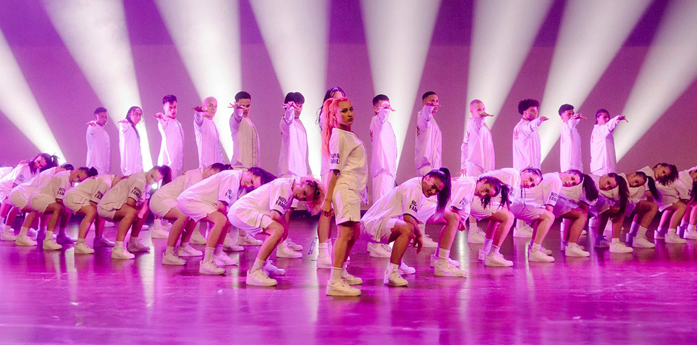

El Día Internacional de la Danza se celebra cada año el 29 de abril, que coincide con el día de nacimiento del creador del ballet moderno, Jean-Georges Noverre.
Estos son los eventos para el día de hoy lunes 29 de abril del 2024. Si todavía alcanzas a disfrutar de este bello arte que el día de hoy se celebra internacionalmente.
La danza y el movimiento están intrínsecamente relacionados, creando una sinergia única que permite la expresión del cuerpo de una manera singular. En el mundo de la danza, las frases de movimiento desempeñan un papel fundamental, ya que son herramientas que ayudan a los bailarines a comprender y ejecutar los movimientos de forma fluida y coherente. Estas frases, también conocidas como combinaciones coreográficas, son secuencias de pasos y movimientos que se realizan de manera consecutiva y se utilizan tanto en la enseñanza como en la creación de coreografías.
La danza va más allá de una simple secuencia de gestos, siendo una expresión artística que dota de sentido y tiempo a cada movimiento. La conexión y continuidad fluida entre las frases de movimiento genera una armonía y coherencia que potencian la belleza y significado de esta forma de comunicación artística.
La danza es un lenguaje universal que va más allá de las palabras. A través de sus movimientos, expresiones y ritmos, la danza transmite un mensaje de liberación, conexión emocional y expresión personal. Cada coreografía y cada pas de deux cuentan una historia única, con su propia carga emocional y significado. La danza es un medio para comunicar sentimientos, ideas y pensamientos de una manera única y poderosa, que impacta tanto a los bailarines como al público.
El baile y la danza son dos disciplinas maravillosas que han mantenido su popularidad hasta hoy en día. Y es que hay muchos estilos diferentes que atraen a diversos tipos de personas que quieren moverse o incluso aprender nuevos pasos. No obstante, hay veces en las que una persona pueda no sentir ánimos de bailar, o que se desanime porque no puede aprender bien una coreografía. En este momento es cuando, como profesor, vale la pena recordar las frases de baile para así generar más entusiasmo entre los estudiante.El baile y la danza son dos disciplinas maravillosas que han mantenido su popularidad hasta hoy en día. Y es que hay muchos estilos diferentes que atraen a diversos tipos de personas que quieren moverse o incluso aprender nuevos pasos. No obstante, hay veces en las que una persona pueda no sentir ánimos de bailar, o que se desanime porque no puede aprender bien una coreografía. En este momento es cuando, como profesor, vale la pena recordar las frases de baile para así generar más entusiasmo entre los estudiantes.
A continuación encontarras algunas frasea para este dia:
Hay grupos de baile que inspiran a muchos, pero hoy en día se han vuelto muy populares los grupos de la cultura coreana en latino américa uno de los que ha destacado es Jam Republic está compuesto por cinco miembros los cuales son Kirsten, Latrice, Ling, Emma y Audrey, y todos los estilos de baile individualistas.
El equipo de baile compitioen el programa de televisión de supervivencia de Corea del Sur Street Woman Fighter 2 , y parece que cada una de sus actuaciones se ha vuelto viral en las redes sociales, no solo eso, probablemente reconozcas a ciertos miembros del equipo de baile, desde el video de baile “ 3D ” más reciente de Jung Kook hasta el icónico video musical “ Sorry ” de Justin Bieber .
Así como Jam Republic hay muchos grupos que te pueden a llegar a inspirar.
La Royal Family es un equipo de danza urbana originario de Nueva Zelanda que actualmente está en alta demanda, ya que han colaborado con artistas de la talla de Jennifer Lopez, Jason Derulo o Justin Bieber, por ejemplo, en el videoclip Sorry. Su estilo combina hip-hop, breakdance y elementos acrobáticos. Su vitrina de trofeos no es ajena al oro; La Familia Real es campeona nacional en múltiples ocasiones de Hip Hop International New Zealand y medallista de oro en eventos como el Campeonato Mundial de Danza Hip Hop . Pero su historia de bailes de victoria no termina ahí; El equipo también ha obtenido numerosos títulos nacionales e internacionales, estableciendo a los bailarines como una fuerza dominante en la industria de la danza.

Así como hay grupos hay bailarines que
nos insipiran , como lo es Isaac Hernández, este joven tapatío comenzó a practicar ballet desde los 9 añitos de edad. Ha sido multipremiado en Italia, Londres, ganó la medalla de oro en las Olimpiadas de Ballet y fue reconocido internacionalmente con el máximo galardón de su disciplina: el Benois de la Danse, que otorga la Asociación Internacional de la Danza de Moscú al mejor bailarín del mundo. Hoy es uno de los principales impulsores de la danza en México y cada año produce la gala de danza “Despertares”.
Es la única mexicana que ha ganado los tres premios más importantes de la danza a nivel internacional: el Prix Benois de la Danse, el Alma de la Danza de Rusia y el Festival Dance Open en San Petersburgo. Nació en Texcoco, Estado de México, en 1981 y es una bailarina y embajadora de la cultura en México. Actualmente es la Prima Ballerina en el Staatsballett Berlin, una de las diez compañías de ballet más reconocidas en el mundo.
Colaboramos con deferentes grupos de los cuales a continuación mencinare para que los conozcan:
Es un grupo de Baile versatil en el cual veras diferentes estilos de baile como Contemporaneo, Ballet solo por mencionar algunos, estos mismos se juntan en coreografias de un tema en especifico.
Es un grupo de baile moderno en el cual se esncuentra el hip-hop, Jazz entre otros, en este grupo se hace un mix de canciones el cual hace que se vayan mezclando las coreografias.
Este grupo es de baile urbano el cual es la varia mezcla de estilos como el freestyle, africano, entre otros. en estegrupo entre más energia tengas mejor.
Si quuiieres se parte de nuestros grupos ponte en ecpntacto con nosotros.